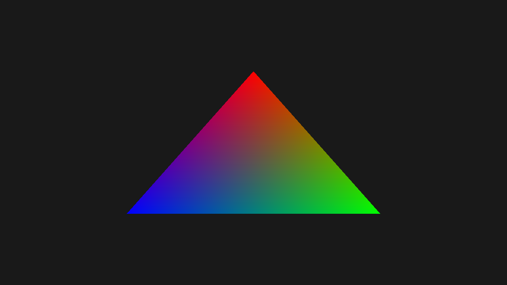

Hello Triangle
In this tutorial, you'll create a renderer that draws a single colored triangle on screen. This is the classic starting point for graphics programming — establishing the graphics pipeline, defining vertex data, and issuing a draw call.
Overview
This tutorial covers:
- Defining a Slang shader with vertex and pixel stages
- Creating a vertex buffer with position and color data
- Configuring an input layout to describe vertex attributes
- Building a graphics pipeline with render states
- Recording and submitting command buffers to render a frame
The Renderer Class
Create the file Renderers/HelloTriangleRenderer.cs:
namespace ZenithTutorials.Renderers;
internal unsafe class HelloTriangleRenderer : IRenderer
{
private const string ShaderSource = """
struct VSInput
{
float3 Position : POSITION0;
float4 Color : COLOR0;
};
struct PSInput
{
float4 Position : SV_POSITION;
float4 Color : COLOR;
};
PSInput VSMain(VSInput input)
{
PSInput output;
output.Position = float4(input.Position, 1.0);
output.Color = input.Color;
return output;
}
float4 PSMain(PSInput input) : SV_TARGET
{
return input.Color;
}
""";
private readonly Buffer vertexBuffer;
private readonly GraphicsPipeline pipeline;
public HelloTriangleRenderer()
{
Vertex[] vertices =
[
new(new( 0.0f, 0.5f, 0.0f), new(1.0f, 0.0f, 0.0f, 1.0f)),
new(new( 0.5f, -0.5f, 0.0f), new(0.0f, 1.0f, 0.0f, 1.0f)),
new(new(-0.5f, -0.5f, 0.0f), new(0.0f, 0.0f, 1.0f, 1.0f)),
];
vertexBuffer = App.Context.CreateBuffer(new()
{
SizeInBytes = (uint)(sizeof(Vertex) * vertices.Length),
StrideInBytes = (uint)sizeof(Vertex),
Flags = BufferUsageFlags.Vertex | BufferUsageFlags.MapWrite
});
vertexBuffer.Upload(vertices, 0);
InputLayout inputLayout = new();
inputLayout.Add(new() { Format = ElementFormat.Float3, Semantic = ElementSemantic.Position });
inputLayout.Add(new() { Format = ElementFormat.Float4, Semantic = ElementSemantic.Color });
using Shader vertexShader = App.Context.LoadShaderFromSource(ShaderSource, "VSMain", ShaderStageFlags.Vertex);
using Shader pixelShader = App.Context.LoadShaderFromSource(ShaderSource, "PSMain", ShaderStageFlags.Pixel);
pipeline = App.Context.CreateGraphicsPipeline(new()
{
RenderStates = new()
{
RasterizerState = RasterizerStates.CullNone,
DepthStencilState = DepthStencilStates.Default,
BlendState = BlendStates.Opaque
},
Vertex = vertexShader,
Pixel = pixelShader,
ResourceLayout = null,
InputLayouts = [inputLayout],
PrimitiveTopology = PrimitiveTopology.TriangleList,
Output = App.FrameBuffer.Output
});
}
public void Update(double deltaTime)
{
}
public void Render()
{
CommandBuffer commandBuffer = App.Context.Graphics.CommandBuffer();
commandBuffer.BeginRenderPass(App.FrameBuffer, new()
{
ColorValues = [new(0.1f, 0.1f, 0.1f, 1.0f)],
Depth = 1.0f,
Stencil = 0,
Flags = ClearFlags.All
});
commandBuffer.SetPipeline(pipeline);
commandBuffer.SetVertexBuffer(vertexBuffer, 0, 0);
commandBuffer.Draw(3, 1, 0, 0);
commandBuffer.EndRenderPass();
commandBuffer.Submit(waitForCompletion: true);
}
public void Resize(uint width, uint height)
{
}
public void Dispose()
{
pipeline.Dispose();
vertexBuffer.Dispose();
}
}
[StructLayout(LayoutKind.Sequential)]
file struct Vertex(Vector3 position, Vector4 color)
{
public Vector3 Position = position;
public Vector4 Color = color;
}
Running the Tutorial
Run the application and select 1. Hello Triangle from the menu:
dotnet run
Result

Code Breakdown
Shader
The shader is written inline as a Slang source string. It defines two stages:
private const string ShaderSource = """
struct VSInput
{
float3 Position : POSITION0;
float4 Color : COLOR0;
};
struct PSInput
{
float4 Position : SV_POSITION;
float4 Color : COLOR;
};
PSInput VSMain(VSInput input)
{
PSInput output;
output.Position = float4(input.Position, 1.0);
output.Color = input.Color;
return output;
}
float4 PSMain(PSInput input) : SV_TARGET
{
return input.Color;
}
""";
- VSMain: Converts the 3D position to clip space and passes the color through
- PSMain: Outputs the interpolated vertex color
Vertex Data
Three vertices define the triangle with red, green, and blue colors:
Vertex[] vertices =
[
new(new( 0.0f, 0.5f, 0.0f), new(1.0f, 0.0f, 0.0f, 1.0f)),
new(new( 0.5f, -0.5f, 0.0f), new(0.0f, 1.0f, 0.0f, 1.0f)),
new(new(-0.5f, -0.5f, 0.0f), new(0.0f, 0.0f, 1.0f, 1.0f)),
];
The Vertex struct is defined as a file-scoped type with sequential layout:
[StructLayout(LayoutKind.Sequential)]
file struct Vertex(Vector3 position, Vector4 color)
{
public Vector3 Position = position;
public Vector4 Color = color;
}
Vertex Buffer
The buffer is created with Vertex | MapWrite flags. MapWrite enables CPU-side uploads:
vertexBuffer = App.Context.CreateBuffer(new()
{
SizeInBytes = (uint)(sizeof(Vertex) * vertices.Length),
StrideInBytes = (uint)sizeof(Vertex),
Flags = BufferUsageFlags.Vertex | BufferUsageFlags.MapWrite
});
vertexBuffer.Upload(vertices, 0);
Input Layout
The input layout tells the pipeline how to interpret vertex data. The order must match the shader's VSInput:
InputLayout inputLayout = new();
inputLayout.Add(new() { Format = ElementFormat.Float3, Semantic = ElementSemantic.Position });
inputLayout.Add(new() { Format = ElementFormat.Float4, Semantic = ElementSemantic.Color });
Graphics Pipeline
The pipeline binds everything together — shaders, render states, input layout, and output format:
pipeline = App.Context.CreateGraphicsPipeline(new()
{
RenderStates = new()
{
RasterizerState = RasterizerStates.CullNone,
DepthStencilState = DepthStencilStates.Default,
BlendState = BlendStates.Opaque
},
Vertex = vertexShader,
Pixel = pixelShader,
ResourceLayout = null,
InputLayouts = [inputLayout],
PrimitiveTopology = PrimitiveTopology.TriangleList,
Output = App.FrameBuffer.Output
});
| Property | Value | Purpose |
|---|---|---|
RasterizerState |
CullNone |
No face culling (both sides visible) |
DepthStencilState |
Default |
Standard depth testing |
BlendState |
Opaque |
No transparency |
ResourceLayout |
null |
No bound resources needed |
PrimitiveTopology |
TriangleList |
Every 3 vertices form a triangle |
Rendering
Each frame, a command buffer records the draw commands:
CommandBuffer commandBuffer = App.Context.Graphics.CommandBuffer();
commandBuffer.BeginRenderPass(App.FrameBuffer, new()
{
ColorValues = [new(0.1f, 0.1f, 0.1f, 1.0f)],
Depth = 1.0f,
Stencil = 0,
Flags = ClearFlags.All
});
commandBuffer.SetPipeline(pipeline);
commandBuffer.SetVertexBuffer(vertexBuffer, 0, 0);
commandBuffer.Draw(3, 1, 0, 0);
commandBuffer.EndRenderPass();
commandBuffer.Submit(waitForCompletion: true);
Draw(3, 1, 0, 0) draws 3 vertices, 1 instance, starting at vertex 0 and instance 0.
Note that BeginRenderPass does not pass a ResourceTable because this renderer has no bound resources.
Resource Cleanup
All GPU resources must be disposed in reverse order of creation:
public void Dispose()
{
pipeline.Dispose();
vertexBuffer.Dispose();
}
Next Steps
- Textured Quad - Add textures, index buffers, and samplers
Source Code
Tip
View the complete source code on GitHub: HelloTriangleRenderer.cs